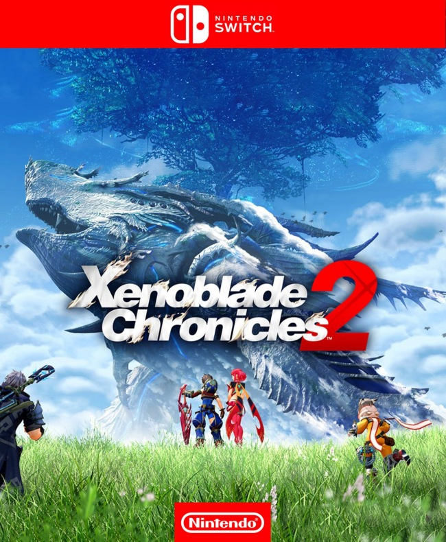

XENOBLADE CHRONICLES 2
Descripcion
Xenoblade Chronicles 2, conocido en Japón como Xenoblade 2, es un videojuego de rol publicado por Nintendo y desarrollado por Monolith Soft para la consola Nintendo Switch. El juego fue anunciado el 12 de enero del 2017 durante la Presentación de Nintendo Switch y lanzado de forma internacional el 1 de diciembre de 2017. El 7 de noviembre de 2017 tuvo lugar un Nintendo Direct enfocado en el título, tras el cual estuvo disponible para comprar un Pase de Expansión que permitía acceder a nuevo contenido para el juego en forma de objetos, misiones, Blades, desafíos y hasta una historia adicional según se fuesen publicando.
Plataformas
° Nintendo Switch
Trailer

Tiendas disponibles